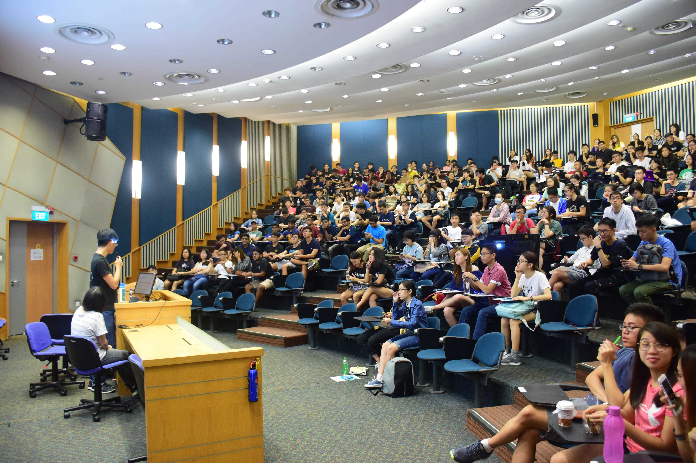
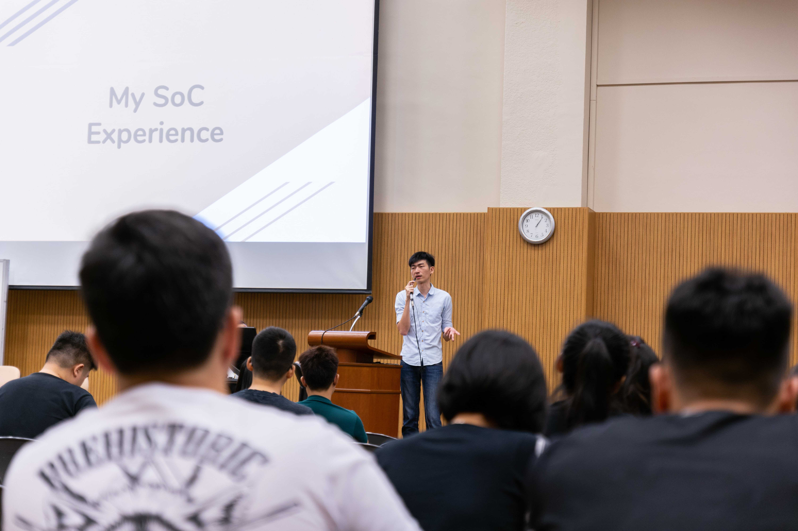

You’ve made it to SoC, but your journey as a university student has just begun! Together, the School of Computing and Computing Club will brief you on what’s to come in your years to come, and share tools and tips to help you fly through the semesters.

Get comfortable, and let us show you the different systems you’ll be using as a student. We’ll be covering frequently used platforms like LumiNUS, Module Registration, and NUSMods, to show you how to simplify your student life.

How about tips for your course? Seniors from different degrees will be sharing their experiences!